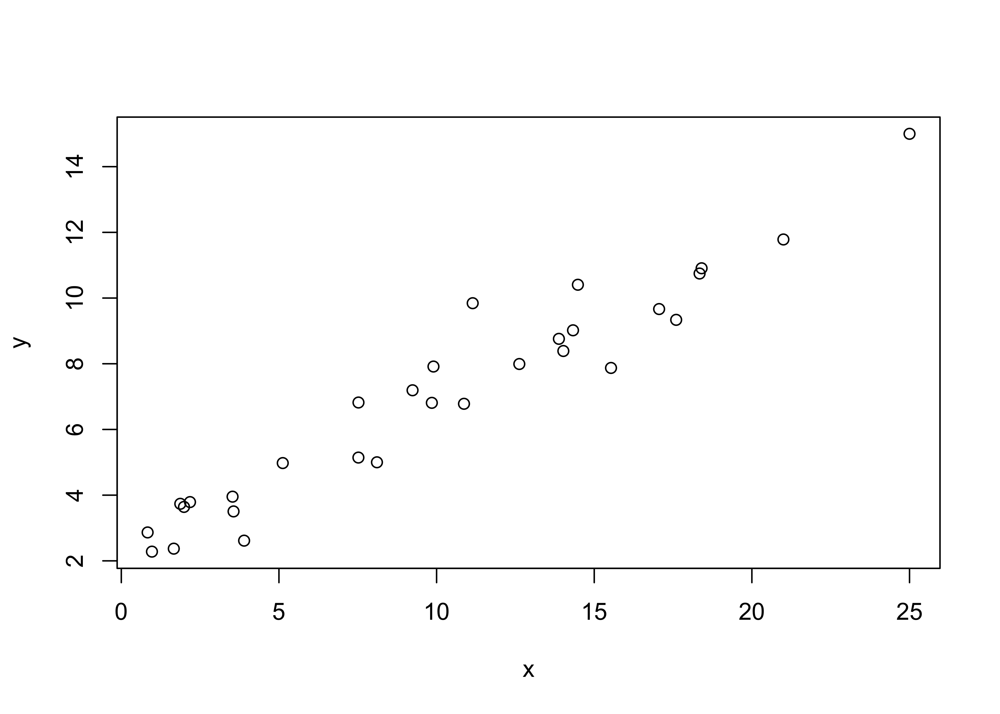
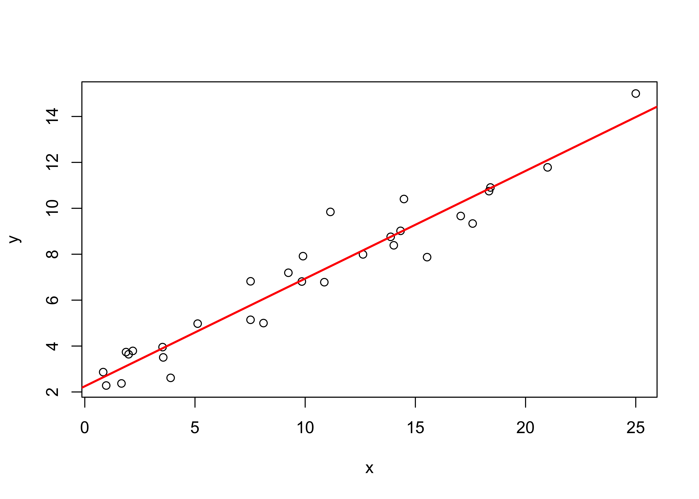
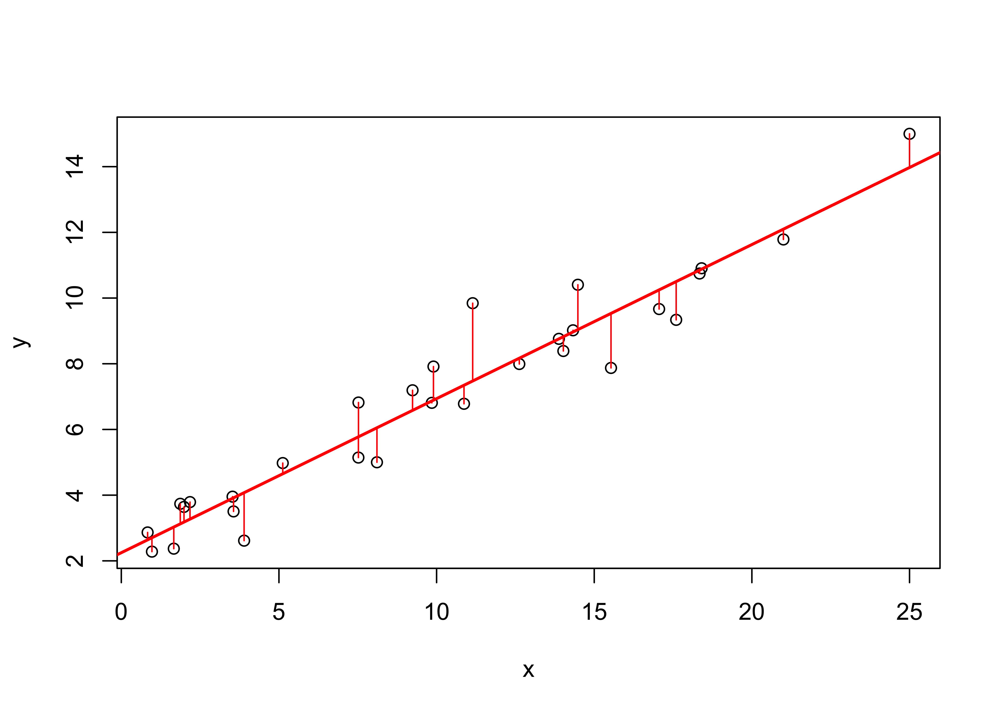
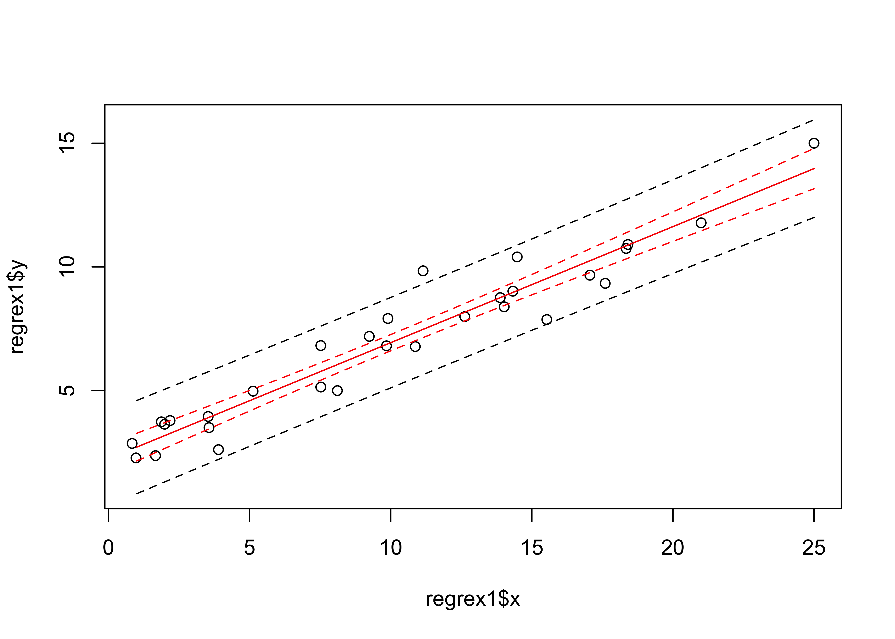
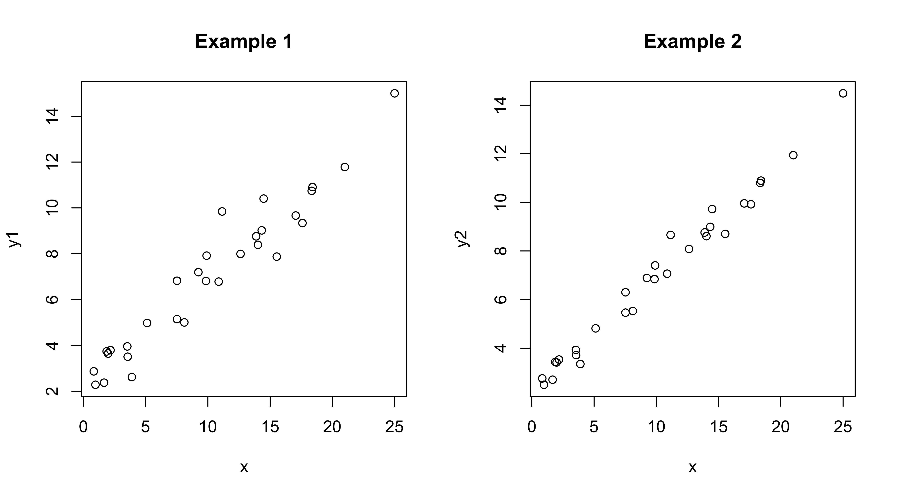
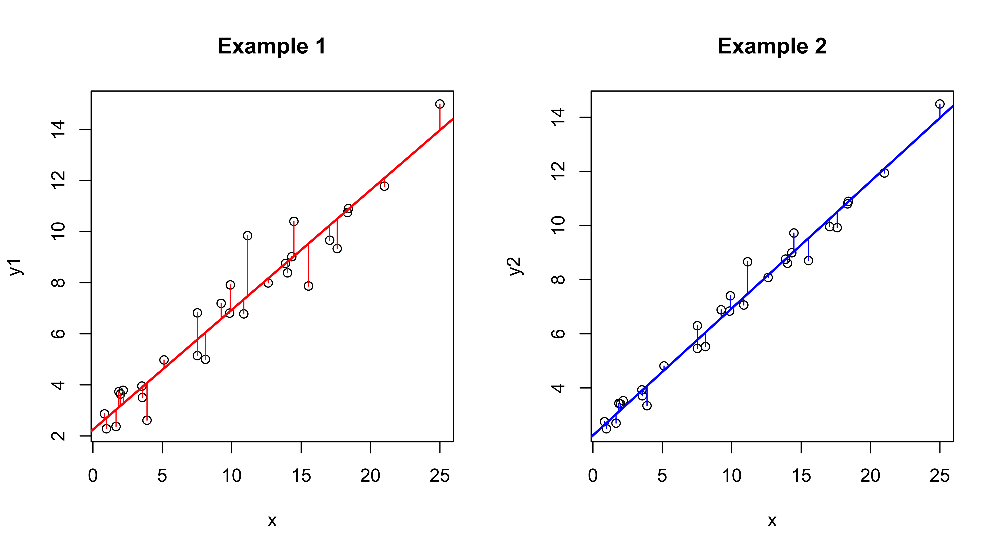
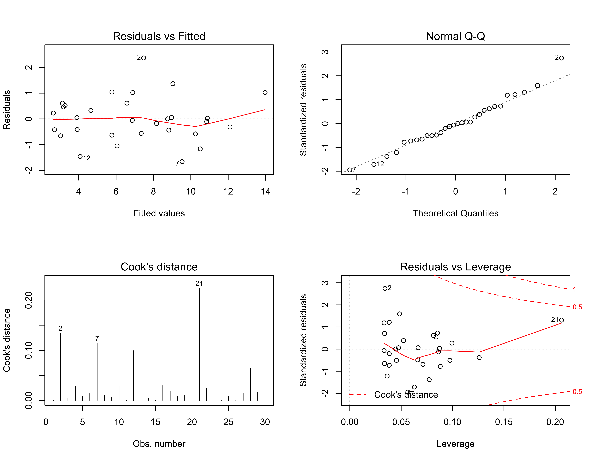
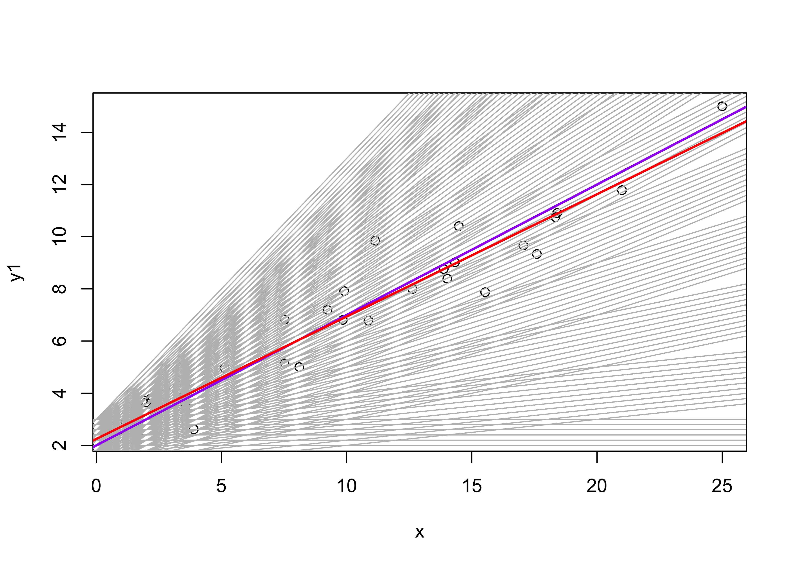

Regression analysis
1 Introduction
Regression analysis aims at constructing relationships between a single dependent or response variable and one or more independent or predictor variables, and is one of the more widely used methods in data analysis. Although the computations and analysis that underlie regression analysis appear more complicated than those for other procedures, simple analyses are quite straightforward.
The general model that underlies regression analysis is
data = predictable component + unpredictable component
“Data” in this case are the observed values of the dependent variable, the predictable component consists of the predictions generated by the regression equation, and the unpredictable component consists of the “residuals” or unpredictable parts of the data. The general idea in regression analysis is to move information into the predictable component, leaving the unpredictable component with no information or pattern.
2 Regression basics
Details of regression analysis, including:
- the regression model and alternative representations
- other quantities in regression analysis (fitted values, residuals, sums of squares)
- “fitting” the regression equation
can be found here.
3 Example
The simplest regression model is the bivariate one, in which there is one response or dependent variable, and one predictor or independent variable, and the relationship between the two is represented by a straight line.
3.1 Fitting a regression equation (or linear model)
Building a bivariate linear regression model to represent the relationship between two variables by a straight line involves determining the coefficients of that line, a process known as “fitting” the regression line. First plot the data! [regrex1.csv]
plot(y ~ x, data=regrex1)
Fit the model. The lm() (linear model) function creates an object that contains the coefficients of the regression equation, fitted values, residuals, etc. which are saved here in the object ex1_lm.
# fit the model
ex1_lm <- lm(y ~ x, data=regrex1)Examine the model. “Printing” the object gives a very short summary, while the summary() function produces a a few more details, and the attributes() function reveals what’s contained in the exa1_lm object.
# examine the model object
print(ex1_lm)##
## Call:
## lm(formula = y ~ x, data = regrex1)
##
## Coefficients:
## (Intercept) x
## 2.2481 0.4691summary(ex1_lm)##
## Call:
## lm(formula = y ~ x, data = regrex1)
##
## Residuals:
## Min 1Q Median 3Q Max
## -1.66121 -0.53286 -0.02869 0.50436 2.36786
##
## Coefficients:
## Estimate Std. Error t value Pr(>|t|)
## (Intercept) 2.24814 0.29365 7.656 2.44e-08 ***
## x 0.46906 0.02444 19.194 < 2e-16 ***
## ---
## Signif. codes: 0 '***' 0.001 '**' 0.01 '*' 0.05 '.' 0.1 ' ' 1
##
## Residual standard error: 0.8779 on 28 degrees of freedom
## Multiple R-squared: 0.9294, Adjusted R-squared: 0.9268
## F-statistic: 368.4 on 1 and 28 DF, p-value: < 2.2e-16attributes(ex1_lm)## $names
## [1] "coefficients" "residuals" "effects" "rank" "fitted.values" "assign"
## [7] "qr" "df.residual" "xlevels" "call" "terms" "model"
##
## $class
## [1] "lm"The regression line can be visualized by adding it to the existing plot using the abline() function
# plot the regression line
plot(y ~ x, data=regrex1)
abline(ex1_lm, col="red", lwd=2)
The individual “deviations” (one per observation) that are being minimized in the analysis can be visualized using the segments() function, which as might be expected plots a line between two points, i.e. between the predicted value of y (retrived using the fitted() function from ex1_lm) and the observed value, at each x value.
plot (y ~ x, data=regrex1)
abline(ex1_lm, col="red", lwd=2)
# plot deviations
segments(regrex1$x, fitted(ex1_lm), regrex1$x, regrex1$y, col="red")
3.2 Examining the regression equation
Once the regression equation has been fit to the data, the next step is to examine the results and the significance of several statistics. First, the standard output
# examine the model object
ex1_lm##
## Call:
## lm(formula = y ~ x, data = regrex1)
##
## Coefficients:
## (Intercept) x
## 2.2481 0.4691summary(ex1_lm)##
## Call:
## lm(formula = y ~ x, data = regrex1)
##
## Residuals:
## Min 1Q Median 3Q Max
## -1.66121 -0.53286 -0.02869 0.50436 2.36786
##
## Coefficients:
## Estimate Std. Error t value Pr(>|t|)
## (Intercept) 2.24814 0.29365 7.656 2.44e-08 ***
## x 0.46906 0.02444 19.194 < 2e-16 ***
## ---
## Signif. codes: 0 '***' 0.001 '**' 0.01 '*' 0.05 '.' 0.1 ' ' 1
##
## Residual standard error: 0.8779 on 28 degrees of freedom
## Multiple R-squared: 0.9294, Adjusted R-squared: 0.9268
## F-statistic: 368.4 on 1 and 28 DF, p-value: < 2.2e-16The fit of the regression model can also be displayed by plotting confidence intervals (which allow variability in the regression line to be visually assessed) and prediction intervals (which allow variability in the data to be assessed).
# get and plot prediction intervals and confidence intervals
pred_data <- data.frame(x=seq(1:25))
pred_int <- predict(ex1_lm, int="p", newdata=pred_data)
conf_int <- predict(ex1_lm, int="c", newdata=pred_data)
# plot the data
ylim=range(regrex1$y, pred_int, na.rm=T, lwd=2)
plot(regrex1$x, regrex1$y, ylim=ylim)
pred_ex1 <- pred_data$x
matlines(pred_ex1, pred_int, lty=c(1,2,2), col="black")
matlines(pred_ex1, conf_int, lty=c(1,2,2), col="red")
3.3 A second example
Side-by-side comparisons of results of regression analyses provide a means for understanding just what is being described by the summary statistics. A second example shows how the regression equation and goodness-of-fit statistics vary as a function of the strength of the relationship between the response and predictor variable. [regrex2.csv]
summary(regrex2)## e x y1 y2 y3
## Min. :-1.66120 Min. : 0.8347 Min. : 2.281 Min. : 2.492 Min. : 2.598
## 1st Qu.:-0.53280 1st Qu.: 3.6437 1st Qu.: 3.830 1st Qu.: 3.766 1st Qu.: 3.840
## Median :-0.02865 Median : 9.8750 Median : 7.006 Median : 6.975 Median : 7.001
## Mean : 0.00001 Mean :10.0678 Mean : 6.971 Mean : 6.970 Mean : 6.970
## 3rd Qu.: 0.50430 3rd Qu.:14.4428 3rd Qu.: 9.257 3rd Qu.: 8.935 3rd Qu.: 9.084
## Max. : 2.36790 Max. :25.0000 Max. :15.000 Max. :14.487 Max. :14.231
## y4 y5 y6
## Min. : 2.662 Min. : 1.154 Min. :-1.766
## 1st Qu.: 3.913 1st Qu.: 4.154 1st Qu.: 3.682
## Median : 6.928 Median : 7.278 Median : 6.297
## Mean : 6.971 Mean : 6.971 Mean : 6.970
## 3rd Qu.: 9.126 3rd Qu.: 9.036 3rd Qu.: 9.756
## Max. :14.077 Max. :16.025 Max. :18.076The variables x and y1 are the same as in the previous example, so as a second example look at the relationship between y2 and x:
opar <- par(mfcol = c(1,2))
plot(y1 ~ x, data=regrex2, main="Example 1")
plot(y2 ~ x, data=regrex2, main="Example 2")
Get the second regression:
ex2_lm <- lm(y2 ~ x, data=regrex2)
summary(ex2_lm)##
## Call:
## lm(formula = y2 ~ x, data = regrex2)
##
## Residuals:
## Min 1Q Median 3Q Max
## -0.83062 -0.26641 -0.01437 0.25222 1.18393
##
## Coefficients:
## Estimate Std. Error t value Pr(>|t|)
## (Intercept) 2.24810 0.14682 15.31 3.9e-15 ***
## x 0.46906 0.01222 38.39 < 2e-16 ***
## ---
## Signif. codes: 0 '***' 0.001 '**' 0.01 '*' 0.05 '.' 0.1 ' ' 1
##
## Residual standard error: 0.439 on 28 degrees of freedom
## Multiple R-squared: 0.9814, Adjusted R-squared: 0.9807
## F-statistic: 1474 on 1 and 28 DF, p-value: < 2.2e-16And compare it with the first:
summary(ex1_lm)##
## Call:
## lm(formula = y ~ x, data = regrex1)
##
## Residuals:
## Min 1Q Median 3Q Max
## -1.66121 -0.53286 -0.02869 0.50436 2.36786
##
## Coefficients:
## Estimate Std. Error t value Pr(>|t|)
## (Intercept) 2.24814 0.29365 7.656 2.44e-08 ***
## x 0.46906 0.02444 19.194 < 2e-16 ***
## ---
## Signif. codes: 0 '***' 0.001 '**' 0.01 '*' 0.05 '.' 0.1 ' ' 1
##
## Residual standard error: 0.8779 on 28 degrees of freedom
## Multiple R-squared: 0.9294, Adjusted R-squared: 0.9268
## F-statistic: 368.4 on 1 and 28 DF, p-value: < 2.2e-16Note that the intercept and slope parameter estimates are identical, but all of the measures of goodness-of-fit or of the uncertainty of the parameter values (their standard errors) and significance (t-tests and p-values) are “better” in the second example. Compare the two regression lines and note the differences in the deviations that are being minimized.
opar <- par(mfcol = c(1,2))
plot(y1 ~ x, data=regrex2, main="Example 1")
abline(ex1_lm, col="red", lwd=2)
segments(regrex2$x, fitted(ex1_lm), regrex2$x, regrex2$y1, col="red")
plot(y2 ~ x, data=regrex2, main="Example 2")
abline(ex2_lm, col="blue", lwd=2)
segments(regrex2$x, fitted(ex2_lm), regrex2$x, regrex2$y2, col="blue")
3.4 Residual plots and case-wise statistics
There are a number of residual diagnostic plots that can be generated to examine the regression results as well as to assess the importance of any assumption violations.
# standard regression diagnostics (4-up)
oldpar <- par(mfrow = c(2, 2))
plot(ex1_lm, which=c(1,2,4,5))
par(oldpar)The residual scatterplot (upper left) shows the relationship between the residuals and the fitted values and should show no systematic pattern (“meagaphone” or “arch”) that would signal model inadequecy (i.e., it should be a featureless cloud of points). The red lowess curve helps summarize any trend that might be apparent. The Normal QQ plot (upper right) provides a quick look at the distribution of the residuals, which should be approximately normal (i.e., the individual values should plot along a straight line). Points that plot off the line are labeled with their case numbers (i.e. rows in the data frame). The two plots on the bottom, of Cook’s distance (lower left) and leverage (lower right) provide information on the influence of each observation on the overall regression.
4 Iterative fitting (i.e. brute-force optimzation) of a regression equation
Regression equations can also be fit by perturbing (or iteratively considering different) regression parameter values, and choosing the combination that minimizes the sum of squares of residuals. The following code sets up a range of potential regression coeffiecient/parameter values that will be interatively considered, keeping track of the sum of squares of deviations for each combination (expressed as the residual standard error for comparison with the the results produced by lm()). (The optimal combination is then the one that minimizes the sum of squares.)
# fit a linear regression equation by
# minimizing the sum of squared residuals
# uses regrex1.csv
# set some constant values
n <- length(regrex2$y1)
K <- 1
# intercept values range
n_b0 <- 11
b0_min <- 1.0 # 2.00 # 2.24
b0_max <- 3.0 # 2.40 # 2.25
# slope values range
n_b1 <- 11
b1_min <- 0.0 # 0.4 # 0.46
b1_max <- 1.0 # 0.5 # 0.47
# coefficents
b0 <- seq(b0_min, b0_max, len=n_b0)
b1 <- seq(b1_min, b1_max, len=n_b1)
# space for residual standard-error values
rse <- matrix(nrow=n_b0*n_b1, ncol=3)
colnames(rse) <- c("b0", "b1", "rse")
# matrix for residual sum of squares
rss <- matrix(NA, nrow=n_b0, ncol=n_b1)Now iterate over the combinations of intercept and slope values, keeping track of the residual standard errors and drawing the line produced by each combination.
plot(y1 ~ x, data=regrex2)
m <- 0
for (j in 1:n_b0) {
for (k in 1:n_b1) {
m <- m + 1
sse <- 0.0
for (i in 1:n) {
sse <- sse + (regrex2$y1[i] - b0[j] - b1[k]*regrex2$x[i])^2
}
rss[j, k] <- sse
rse[m,1] <- b0[j]
rse[m,2] <- b1[k]
rse[m,3] <- sqrt(sse/(n-K-1))
abline(b0[j], b1[k], col="gray")
}
}
# find the coefficients that minimize the rse
m_min <- which.min(rse[,3])
print(m_min)## [1] 61print(c(rse[m_min,1],rse[m_min,2],rse[m_min,3]))## b0 b1 rse
## 2.0000000 0.5000000 0.9050813# plot the line for the optimal coefficients
abline(rse[m_min,1],rse[m_min,2], col="purple", lwd=2)
# plot the OLS regression line
abline(ex1_lm, col="red", lwd=2)
The which.min() function determines the row in the rse matrix of the minimum (i.e. “optimal”) residual standard error, and the corresponding parameter values are then printed out. The regression line generated by those values is plotted in blue, and can be compared with the OLS estimates in red. Pretty close.
It’s useful to see the residual-sum-of-squares surface, which shows graphically how the goodness-of-fit varies as the regression coefficient values change.
image(b0, b1, rss, col = gray((0:64)/64))
The values in the rss matrix can be inspected using the View() function.
5 Examining the regression equation
Examination of the regression equation involves an assessment of the “strength” of the relationship between the response variable and the predictor variable(s). Two hypothesis tests are considered:
- a test of the null hypothesis that the proportion of the variance of the response variable “explained” by the predictor variable(s) is not significant (an F-test, analogous to the one in ANOVA of the hypothesis that the group means are not different)
- individual tests of the null hypotheses that the estimated regression coefficients (b0, b1) are equal to zero.
The two hypotheses are tested by examining the regression equation and related statistics
- decomposition of individual deviations
- how strong is the relationship? (F-test, R2)
- are the coefficients significant? (t-tests and standard errors of the predictions)
The fit of the regression model can also be displayed by plotting confidence intervals (which allow variability in the regression line to be visually assessed) and prediction intervals (which allow variability in the data to be assessed).
6 Analysis of Variance
One of the main elements of the output in fitting a regression equation is the analysis of variance table, which as sounds, has some parallels with “Analysis of Variance” (ANOVA) the procedure for testing for equality of group means. In regression analysis, the decomposition of the variance of the dependent variable is
variance of response = variance “explained” by regression + residual variance (noise)
In ANOVA, the total variance of the variable of interest is decomposed as
total variance = between-group variance + within-group variance
If ANOVA is thought of as evaluating how much of the variability of a “response” variable can be explained by knowing which group each observation belongs to, then the similarity of the analyses can be seen.
7 Readings
- Kuhnert & Venebles (An Introduction…): p. 109-120;
- Maindonald (Using R…): ch. 5